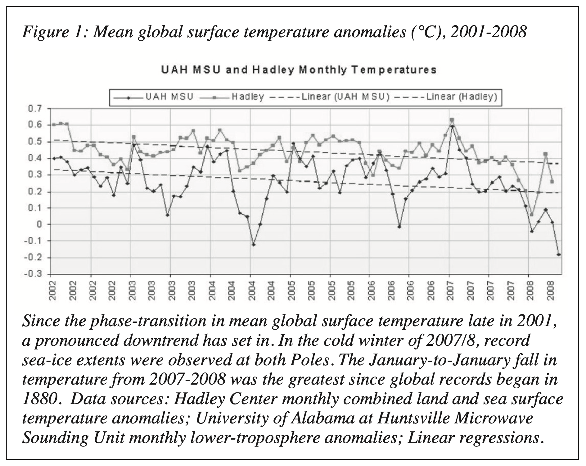
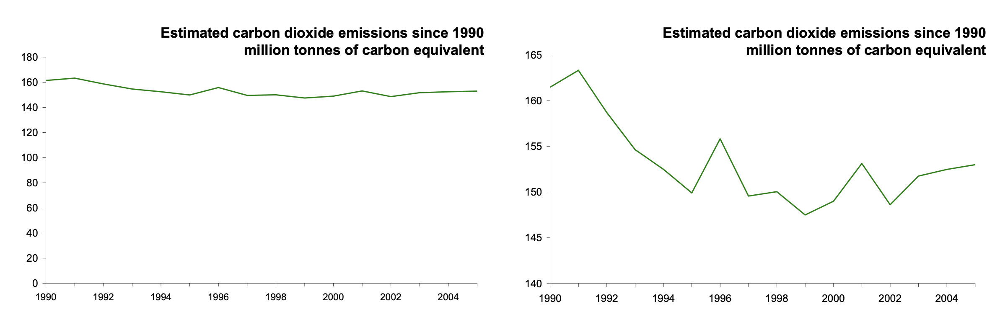
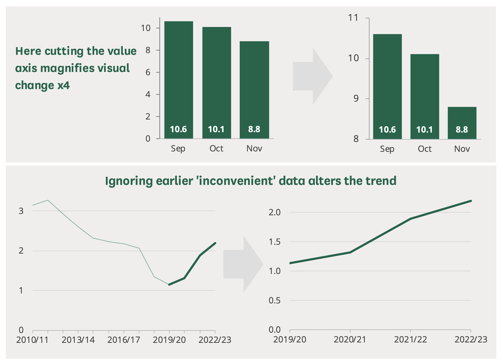
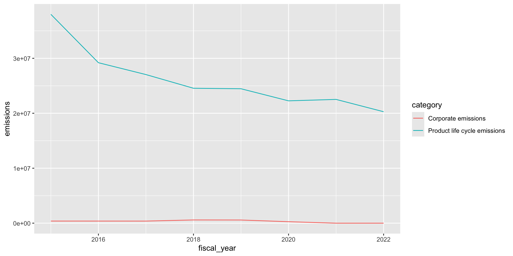

Week 5
Applying a critical eye to statistical reporting
![]()
Lecturer in AI and Machine Learning for Sustainable Construction
Misleading Statistics
Source: Factcheck: No, global warming has not ‘paused’ over the past eight years, Carbon Brief. (Hausfather 2022)
Misleading Statistics
We’ll use a case study of data presented by climate change sceptics to illustrate how even real data and “mathematically correct” statistical analysis can be used to mislead.
Some types of misleading statistics:
- cherry-picking data
- overgeneralization
- faulty causality
- biased sampling
- misleading graphs
- reporting non-statistically-significant results as significant
- reporting statistically-significant but not practically-significant results as meaningful
See Calling Bullshit - The Art of of Skepticism in a Data-Driven World (Bergstrom and West 2021) for more examples.
“Hiatus in Global Warming”
In the 2010’s a claim began to circulate that data showed that “global mean surface temperature \(T_S\) has not risen since 1998, and may have fallen since late 2001” (Monckton 2008).
Along with some controversies about the source of climate data, this became known as ‘ClimateGate’. Similar claims arose again in 2022, showing an apparent pause in climate change from 2015-2022.
These claims were based on data - they presented analyses and visualisations of global temperature data which in fact did appear to show a pause or a decrease in global temperature, apparently disproving anthroprogenic climate change.
Let’s take a look back at this data with a critical eye and see whether we find them convincing.
Climate Change measurements
We won’t be getting into the science of climate change here, but it’s good to understand the basic arguments and sources of evidence.
To get a complete picture of Earth’s temperature, scientists combine measurements from the air above land and the ocean surface collected by ships, buoys and sometimes satellites, too.
The temperature at each land and ocean station is compared daily to what is ‘normal’ for that location and time, typically the long-term average over a 30-year period. The differences are called an ‘anomalies’ and they help scientists evaluate how temperature is changing over time.
A ‘positive’ anomaly means the temperature is warmer than the long-term average, a ‘negative’ anomaly means it’s cooler.
Climate Change measurements

GISS Surface Temperature Analysis. Source: NASA (2025)
The First Global Warming Pause
In Monckton (2008), published in a peer-reviewed journal of The American Physical Society, Christopher Monckton claimed that the mean global temperature data across the four major data sources showed that \(T_S\) has not risen between 2001 and 2008.
He presented a time series plot which confirms this.
the conclusion is that, perhaps, there is no “climate crisis”, and that currently-fashionable efforts by governments to reduce anthropogenic CO2 emissions are pointless, may be ill-conceived, and could even be harmful.
The First Global Warming Pause
Mean global surface temperature anomalies, 2001-2008. Source: Monckton (2008)
The New Global Warming Pause
Nearly a decade later, talk of a pause has re-emerged with claims in the media such as:
contrary to the dogma which holds that a rise in carbon dioxide inescapably heats up the atmosphere global temperature has embarassingly flatlined for more than seven years even as CO2 levels have risen. (Phillips 2022)
Again, the claim comes from a blog post written by Christopher Monckton titled The New Pause Lengthens to 7 years 10 months (Monckton 2022). Let’s look in depth at the data used to make this claim.
The New Global Warming Pause

So, what is wrong with this presentation? Why might it be misleading?
The New Global Warming Pause
Cherrypicking Data
Looking at these eight years in isolation ignores the larger context.
A slightly different eight-year period - 2011 to 2018 rather than 2015 to 2022 - would offer the opposite conclusion, namely that global warming had massively accelerated to a rate of 5.6C per century.
Same as the prior plot, but showing annual global surface temperature data from 2000 and the trend over the 8-year period from 2011 through to 2018. (Hausfather 2022)
Cherrypicking Data
In reality, both of these are acts of “cherry-picking” - overemphasising short-term variability.
Also note that Monckton picks his time periods carefully - the first ‘pause’ is from 2001 to 2008. Next, he shows the data from 2015 to 2022 - so what happened from 2008 to 2015? That is left out.
Finding spurious patterns within natural variance
So the questions we should ask, from a statistics perspective are:
- How large is the expected variability over any given period?
- Does the apparent downward trend in the period 2015-2022 fit within this variability, meaning we might just be looking at what is effectively noise?
- Or is the trend large enough to be seen without this random variability?
The fluctuations in recent years are well within the range of expected variability, and do not indicate any departure from the long-term warming trend in surface temperatures the world has experienced over the past 50 years.
The acceleration started from below the trendline and brought temperatures well above it, while the pause started above the trendline and brought temperatures back down to around what would be expected for 2021 and 2022.
Zooming out further makes the trend very clear.
The ‘pause’ periods fit well within the natural variability. By intentionally focusing in on the periods which decrease effectively by chance over a short period of time, we can make the data appear to show a trend which is not there.
Same as the prior plots, but including Berkeley Earth data from 1850 through 2021. (Hausfather 2022)
Other types of misleading or inappropriate visualisations


Concluding Thoughts
When presented with a statistical analysis or visualisation, what questions should we ask?
How can we make sure we’re thinking about the data critically?
Further Reading
(Bolton 2023). How to spot spin and inappropriate use of statistics (Research Briefing No. 4446). UK House of Commons Library.
(Bolton 2007). Statistical literacy guide: How to read charts (Research Briefing No. SN04445). UK House of Commons Library.
References
The Data Analysis Workflow

Source: Wickham, Çetinkaya-Rundel, and Grolemund (2023), Poldrack (2023)
The process of statistical modeling
There is a set of steps that we generally go through when we want to use our statistical model to test a scientific hypothesis:
- Specify your question of interest
- Identify or collect the appropriate data
- Prepare the data for analysis
- Determine the appropriate model
- Fit the model to the data
- Criticize the model to make sure it fits properly
- Test hypothesis and quantify effect size
- Communicate your analysis
Data Analysis Workflow
Import
Throughout, we have been using the tidyverse library of packages for data analysis.
The tidyverse is an opinionated collection of R packages designed for data science. All packages share an underlying design philosophy, grammar, and data structures.

Import
- There are tools for reading data from almost any source:
read_csv(),read_excel(),read_rds(), …
- When we load a dataset with a
tidyverse()function, it will return atibble
Tidy
The same data can be represented in multiple ways. Here’s the same data organized three different ways:
# A tibble: 6 × 4
country year cases population
<chr> <dbl> <dbl> <dbl>
1 Afghanistan 1999 745 19987071
2 Afghanistan 2000 2666 20595360
3 Brazil 1999 37737 172006362
4 Brazil 2000 80488 174504898
5 China 1999 212258 1272915272
6 China 2000 213766 1280428583# A tibble: 12 × 4
country year type count
<chr> <dbl> <chr> <dbl>
1 Afghanistan 1999 cases 745
2 Afghanistan 1999 population 19987071
3 Afghanistan 2000 cases 2666
4 Afghanistan 2000 population 20595360
5 Brazil 1999 cases 37737
6 Brazil 1999 population 172006362
7 Brazil 2000 cases 80488
8 Brazil 2000 population 174504898
9 China 1999 cases 212258
10 China 1999 population 1272915272
11 China 2000 cases 213766
12 China 2000 population 1280428583- There are three rules that make a dataset tidy:
- Each variable is a column; each column is a variable.
- Each observation is a row; each row is an observation.
- Each value is a cell; each cell is a single value.

Why ensure your data is tidy?
- There’s a general advantage to picking one consistent way of storing data. If you have a consistent data structure, it’s easier to learn the tools that work with it because they have an underlying uniformity.
- There’s a specific advantage to placing variables in columns because it allows R’s vectorized nature to shine. That makes transforming tidy data feel particularly natural.
So, our first task after importing the data is to make sure it’s tidy. In addition to the rules above, this can also include things like:
- ensure the data types are correct
- clean up the column names
- make sure we know what the variables represent
For the .csv data we loaded, our column names can be a bit difficult to work with since they have spaces in them. We can use a function from the janitor package to clean these:
# A tibble: 127 × 6
fiscal_year category type scope description emissions
<dbl> <chr> <chr> <chr> <chr> <dbl>
1 2022 Corporate emissions Gross emissions Scope 1 Natural ga… 39700
2 2022 Corporate emissions Gross emissions Scope 1 Fleet vehi… 12600
3 2022 Corporate emissions Gross emissions Scope 1 Other (R&D… 2900
4 2022 Corporate emissions Gross emissions Scope … Electricity 0
5 2022 Corporate emissions Gross emissions Scope … Steam, hea… 3000
6 2022 Corporate emissions Gross emissions Scope 3 Business t… 113500
7 2022 Corporate emissions Gross emissions Scope 3 Employee c… 134200
8 2022 Corporate emissions Gross emissions Scope 3 Upstream f… 10600
9 2022 Corporate emissions Gross emissions Scope 3 Work from … 7500
10 2022 Corporate emissions Gross emissions Scope 3 Transmissi… 0
# ℹ 117 more rowsTransform
We’ve dealt with data transformations quite a bit already. This includes operations like calculating the mean for different groups, or for multiple groups:
Visualize
Communicate
This is where we will dive into using Quarto. Start by downloading the Apple Emissions dataset from Moodle and open RStudio.
We’ll go through how to create and write a full analysis in a .qmd file using this dataset.
Refer to our lecture notes specifically on using Quarto